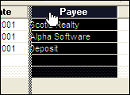

Changing the Browse Appearance
While viewing records in a browse, you can resize rows and columns, re-arrange columns, split the browse to view as many as four different areas in the same window, and show only parent records from a set.
 Note : Appearance modifications remain in the browse only as long as the browse is open; once you close the browse or change to form view, the settings are reset to their default values.
Note : Appearance modifications remain in the browse only as long as the browse is open; once you close the browse or change to form view, the settings are reset to their default values.
You resize rows and columns in a browse by dragging the horizontal or vertical sizing handles. The sizing handles appear when the mouse hovers over the top or left border of the browse. When the pointer becomes a horizontal or vertical sizing handle, you can drag the column or row border to a desired size.
Vertical Sizing Handle

Horizontal Sizing Handle
If you want to resize a column that fills the entire window, click the column's title and press CTRL LEFT. Move left or right until the column divider is in the desired position.
To rearrange browse columns:
Click the title of the column you want to move, which selects the entire column.
Click and hold in the title of the column again and the Column Reordering Bar appears.
Drag the column to a new position, and release.

The Column Reordering Bar
Splitting a browse lets you view the multiple copies of the same browse in the same window, side-by-side. This can be helpful when a browse is wider than the screen, or when you want to work in different areas of the browse simultaneously. You can split a browse up to three times for a total of four sections.

Browse Splitting Handle
To split a Browse:
Move the mouse over the left edge of the browse window.
When the Browse Splitting Handle appears, click and drag the splitting bar to the right, to where you want to divide the Browse.
Repeat the process to split the browse up to three times.
A Split Browse
See Also